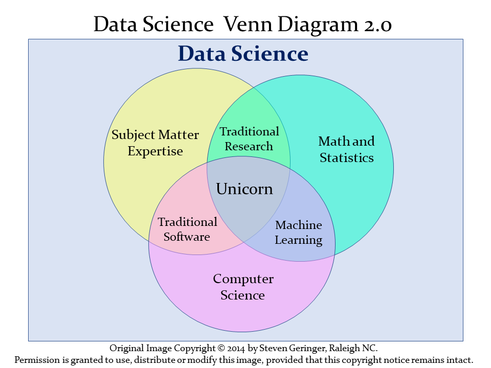

1 Data Science and 431
The definition of data science can be a little slippery. One current view of data science, is exemplified by Steven Geringer’s 2014 Venn diagram.
- The field encompasses ideas from mathematics and statistics and from computer science, but with a heavy reliance on subject-matter knowledge. In our case, this includes clinical, health-related, medical or biological knowledge.
- As Gelman and Nolan (2017) suggest, the experience and intuition necessary for good statistical practice are hard to obtain, and teaching data science provides an excellent opportunity to reinforce statistical thinking skills across the full cycle of a data analysis project.
- The principal form in which computer science (coding/programming) play a role in this course is to provide a form of communication. You’ll need to learn how to express your ideas not just orally and in writing, but also through your code.
Data Science is a team activity. Everyone working in data science brings some part of the necessary skill set, but no one person can cover all three areas alone for excellent projects.
[The individual who is truly expert in all three key areas (mathematics/statistics, computer science and subject-matter knowledge) is] a mythical beast with magical powers who’s rumored to exist but is never actually seen in the wild.
http://www.kdnuggets.com/2016/10/battle-data-science-venn-diagrams.html
1.1 Data Science Project Cycle
A typical data science project can be modeled as follows, which comes from the introduction to the amazing book R for Data Science, by Garrett Grolemund and Hadley Wickham, which is a key text for this course (Wickham and Grolemund 2022).

This diagram is sometimes referred to as the Krebs Cycle of Data Science. For more on the steps of a data science project, we encourage you to read the Introduction of Wickham and Grolemund (2022).
1.2 Data Science and the 431 Course
We’ll discuss each of these elements in the 431 course, focusing at the start on understanding our data through transformation, modeling and (especially in the early stages) visualization. In 431, we learn how to get things done.
- We get people working with R and R Studio and R Markdown, even if they are completely new to coding. A gentle introduction is provided at Ismay and Kim (2022)
- We learn how to use the
tidyverse(http://www.tidyverse.org/), an array of tools in R (mostly developed by Hadley Wickham and his colleagues at R Studio) which share an underlying philosophy to make data science faster, easier, more reproducible and more fun. A critical text for understanding the tidyverse is Wickham and Grolemund (2022). Tidyverse tools facilitate:- importing data into R, which can be the source of intense pain for some things, but is really quite easy 95% of the time with the right tool.
- tidying data, that is, storing it in a format that includes one row per observation and one column per variable. This is harder, and more important, than you might think.
- transforming data, perhaps by identifying specific subgroups of interest, creating new variables based on existing ones, or calculating summaries.
- visualizing data to generate actual knowledge and identify questions about the data - this is an area where R really shines, and we’ll start with it in class.
- modeling data, taking the approach that modeling is complementary to visualization, and allows us to answer questions that visualization helps us identify.
- and last, but definitely not least, communicating results, models and visualizations to others, in a way that is reproducible and effective.
- Some programming/coding is an inevitable requirement to accomplish all of these aims. If you are leery of coding, you’ll need to get past that, with the help of this course and our stellar teaching assistants. Getting started is always the most challenging part, but our experience is that most of the pain of developing these new skills evaporates by early October.
1.3 What The Course Is and Isn’t
The 431 course is about getting things done. In developing this course, we adopt a modern approach that places data at the center of our work. Our goal is to teach you how to do truly reproducible research with modern tools. We want you to be able to collect and use data effectively to address questions of interest.
The curriculum includes more on several topics than you might expect from a standard graduate introduction to biostatistics.
- data gathering
- data wrangling
- exploratory data analysis and visualization
- multivariate modeling
- communication
It also nearly completely avoids formalism and is extremely applied - this is absolutely not a course in theoretical or mathematical statistics, and these Notes reflect that approach.
There’s very little of the mathematical underpinnings here:
\[ f(x) = \frac{e^{-(x - \mu)^{2}/(2\sigma^{2})}}{\sigma{\sqrt{2 \pi }}} \]
Instead, these notes (and the course) focus on how we get R to do the things we want to do, and how we interpret the results of our work. Our next Chapter provides a first example.